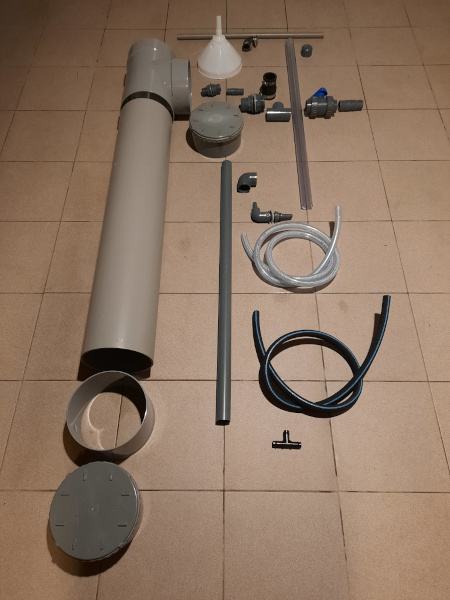
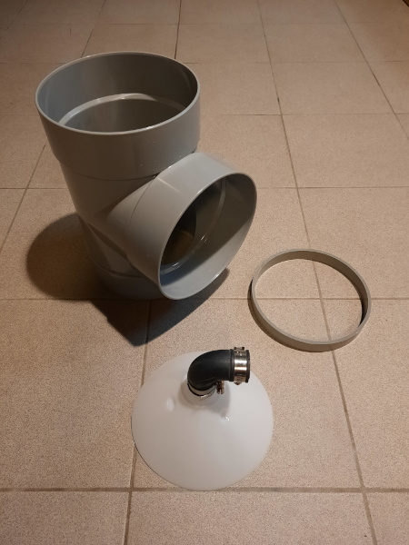
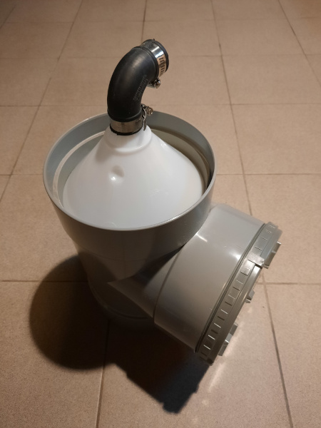
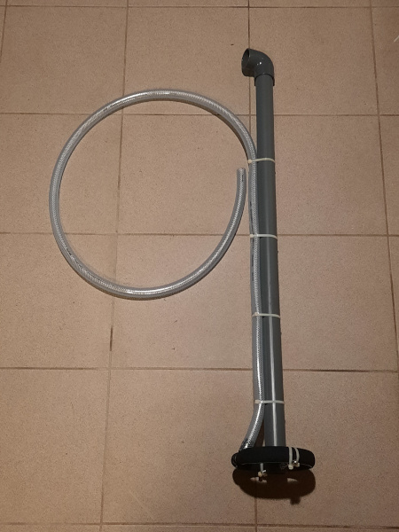
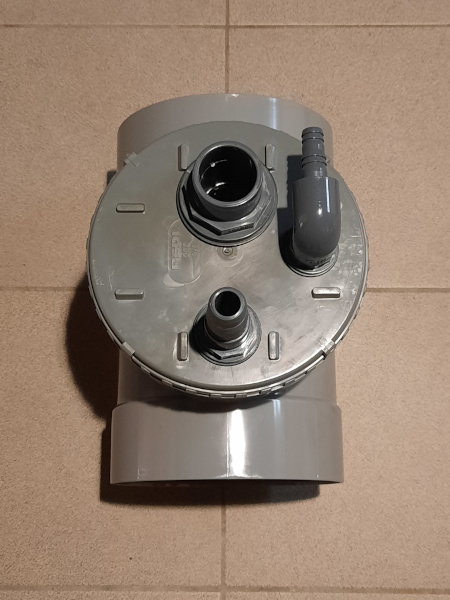
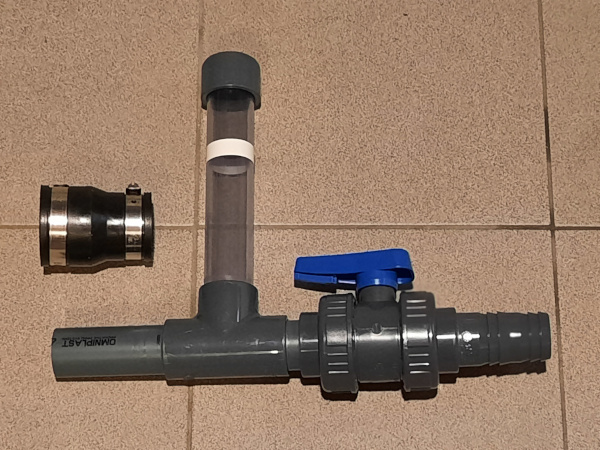
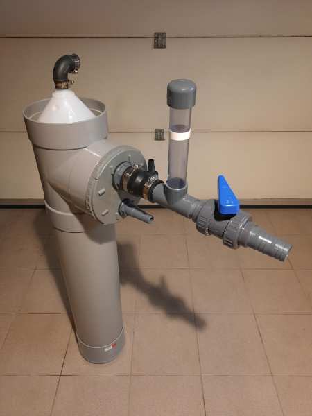

Eiwitafschuimer
Uiteraard mogen aan het begin van een nieuw jaar de goede voornemens niet ontbreken… hoe kan je je koi gelukkiger maken? Bv. door in de wintermaanden je filter aan te passen en weer een beetje te verbeteren. Hierbij dan ook mijn kijk op een eiwitafschuimer als eerste project van 2022 … ik geniet nu eenmaal van deze zelfbouwprojecten. Ik dien wel toe te geven dat ik er in het begin nog niet veel van verwacht … de hoeveelheid voer is nog redelijk beperkt voor 3 kois.
De eiwitafschuimer heeft hetzelfde principe als de Fresh-Skim 200. Maar met zijn 1m80 is die veel te groot voor mijn filterhuis (eigenlijk een omgekeerde filterput). Terry aka Wrighty heeft als ‘experiment’ iets soortgelijks gebouwd en op YouTube is te zien dat zijn protein skimmer wel degelijk werkt… m.a.w. ik ga ook zelf aan de slag…
In onderstaande foto heb ik bijna alle onderdelen zo goed als op hun juiste plaats gelegd. Mijn eiwitafschuimer mag maar 124 cm hoog zijn. De PVC buis met een diameter van 200 mm dient nog ingekort te worden. Ik heb voor een T-stuk in combinatie met een eindstuk met schroefdeksel gekozen om alle aansluitingen op een vlak stuk te hebben (openschroeven is dan ook geen optie meer). Om het waterniveau t.o.v. de trechter te regelen maak ik gebruik van een gekend principe nl. T-stuk met een transparante PVC buis en kogelkraan.

(2 januari 2022 - Bijna alle onderdelen)
Door de beperkte hoogte dien ik wel het waterdebiet te verminderen tot 1000 … 1500 l/h om nog steeds een behoorlijke contacttijd van het water met de luchtbellen van min. 1 minuut na te streven. Hiermee gaat het ganse vijvervolume nog steeds minstens 1 maal per dag door de eiwitafschuimer.
De eerste uitdaging is de aansluiting van de trechter op het T-stuk… wat gelukkig meevalt. De bovenkant van de trechter is afgezaagd tot een diameter van 200 mm. Het is de bedoeling om eerst wat kit aan te brengen op de rand aan de binnenkant van het T-stuk (bovenste mof) en dan de trechter ondersteboven aan te drukken. Vervolgens wordt er een ring van 25 mm verlijmd in het T-stuk als extra mechanische versterking. De kit kan dan netjes afgewerkt worden aan de binnenkant. Met de juiste maat van flexibele bocht kunnen de eiwitten afgeschuimd worden.

(2 januari 2022 - T-stuk en trechter)

(2 januari 2022 - T-stuk met trechter)
Hierbij een volgende stap nl. de constructie van het binnenwerk. Een ring gemaakt uit japanse luchtslang stuurt de lucht van onder naar boven. Omwille van de kleine diameter heeft deze binnenin een ring in 6 mm RVS rond opdat de luchtslang niet dichtplooit. In de grote buis gaat het water van boven naar onder m.a.w. in tegenstroom. Via de 40 mm buis wordt het water terug naar boven geleid. Hiermee worden alle aansluitingen bovenaan gemaakt op het schroefdeksel.

(4 januari 2022 - Binnenwerk)

(4 januari 2022 - Aansluitingen)
Om het water binnenin de trechter op het juiste niveau te krijgen, wordt gebruik gemaakt van een kogelkraan om de stroming te smoren. Door de weerstand te verhogen is er meer druk m.a.w. een groter hoogteverschil vereist. Het waterniveau kan opgevolgd worden in de transparante buis en de plakband geeft de nu bovenkant van de trechter aan

(7 januari 2022 - Regeling waterniveau)
Ondertussen is alles gemonteerd en verlijmd. Het gedeelte dat het waterniveau in de eiwitafschuimer regelt, kan eenvoudig weggenomen worden door de flexibele verloopsok. Nu gaat de eiwitafschuimer in opslag om in het voorjaar geïnstalleerd en uitgetest te worden.

(7 januari 2022 - Eiwitafschuimer)
De tijd is aangebroken om de eiwitafschuimer te installeren en een eerste test uit te voeren. Door middel van de kogelkraan is het waterniveau ingesteld en is duidelijk het bubbelen van het water binnenin de trechter te zien.
(11 juni 2022)